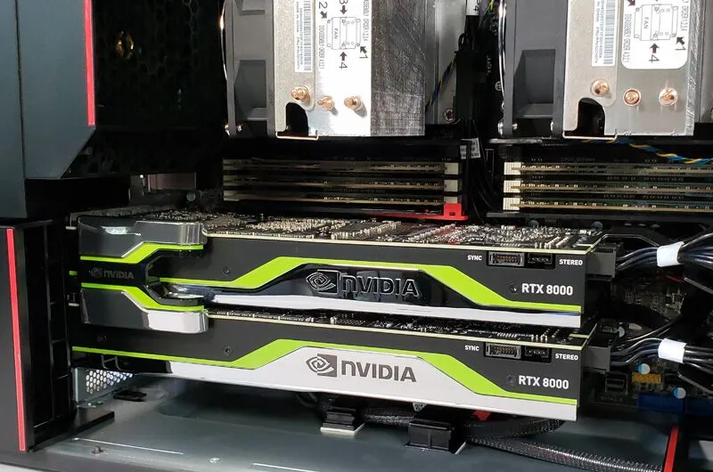

DEEP LEARNING - AI, KIẾN THỨC ĐỒ HỌA, TIN TỨC, TIN TỨC CÔNG NGHỆ
NVLink là gì? – Con đường liên kết đa Card đồ hoạ – GPU!
ĐÃ ĐĂNG TRÊN 19/11/2023 BỞI DUNGTHINH
NVLink là gì và nó hoạt động như thế nào?
Các siêu máy tính và hệ thống AI từ xưa đến nay đã sử dụng giao thức PCI Express (như PCIe 3.0 hay 4.0) để kết nối giữa GPU với CPU, nhưng công nghệ này đã không theo kịp những tiến bộ nhanh chóng của GPU. Vì thế mà NVIDIA đã đưa ra công nghệ NVLink để kết nối các GPU, giúp trao đổi dữ liệu nhanh hơn từ 5 đến 12 lần, đồng thời cũng tiết kiệm năng lượng hơn rất nhiều.
NVLink hoạt động như thế nào?
NVLink là công nghệ kết nối hệ thống độc quyền đầu tiên trên thế giới của NVIDIA cho phép nhiều GPU giao tiếp trực tiếp thông qua kết nối tốc độ cao, mang lại lợi thế lớn cho NVLink bằng cách cho phép bộ nhớ khả dụng của cả hai GPU được kết hợp và truy cập mọi lúc.
Điều này làm tăng tốc độ dữ liệu có thể được trao đổi, cho phép các ứng dụng và workload được thiết kế với NVIDIA NVLink có thể hưởng lợi từ việc tăng cường hiệu suất đáng kể.

NVLink yêu cầu một cầu nối vật lý (NVLink Bridge) giữa các card GPU và sử dụng mạng dạng Mesh, là một cấu trúc liên kết mạng cục bộ, trong đó các node hạ tầng kết nối trực tiếp theo kiểu không phân cấp, cho phép mỗi node chuyển tiếp thông tin thay vì định tuyến thông tin qua bất kỳ node nào.
NVLink Bridge hoạt động tốt nhất với các model GPU: GV100, GP100, Quadro RTX, Titan RTX, GeForce RTX 20-series, GeForce RTX 30-series, Professional Ampere RTX và các GPU cấp Trung tâm dữ liệu của NVIDIA đều hỗ trợ NVLink. NVLink Bridge cũng có nhiều kích cỡ khác nhau cho cả dòng GPU Quadro và GeForce, RTX và Data Center.